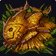

Seed-Battered Fish Plate

Prepares 5 plates of Seed-Battered Fish.
Recipe Discovery
- Zone: Dalaran (Legion)
- NPC: Nomi
- Discovery: Nomi's Test Kitchen
Effect
Restores 28846 health and 14423 mana over 20 sec. Must remain seated
while eating. If you spend at least 10 seconds eating you will become
well fed and gain 13 Versatility for 1 hour.
Reagents
- 1x Koi-Scented Stormray
- 5x Silver Mackerel
- 20x Yseralline Seed
- 3x Muskenbutter
- 2x Dalapeño Pepper
Directions
- Go to a kitchen in a capital city (e.g. Dalaran (Legion)).
- Open the professions tab and click on the "Cooking" profession.
- Check to see if you have all of the required reagents.
- Stand next to a stove, oven, or campfire.
- Click "Cook" (2 second cast)!